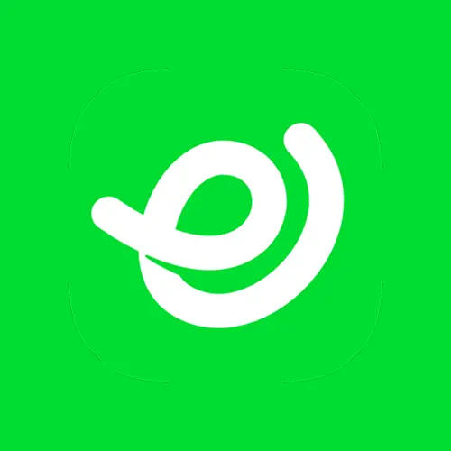

Pangeran Dimas
UI/UX Designer di PT Sentra Vidya Utama · Antusias merancang pengalaman digital yang berdampak

PT Sentra Vidya UtamaAnalitik Profil
Hanya terlihat oleh kamu
341 kunjungan profil
Lihat siapa saja yang mengunjungi profilmu.
58 tampilan pencarian
Berapa kali profilmu muncul di pencarian mitra.
28 tayangan aktivitas
Interaksi pada postingan & aktivitasmu.
Tentang
UI/UX Designer dengan pengalaman merancang produk digital untuk kebutuhan pendidikan dan ketenagakerjaan. Terbiasa bekerja dari riset pengguna hingga pengujian prototipe, dan senang berkolaborasi lintas tim untuk menghasilkan pengalaman yang sederhana namun berdampak. Aktif mengikuti perkembangan tren desain dan terbuka untuk peluang kolaborasi maupun mentoring.
Pengalaman
UI/UX Designer
PT Sentra Vidya Utama · Penuh Waktu · Surabaya
Merancang pengalaman pengguna dan antarmuka untuk produk Portal Karir & Tracer Study, memimpin riset pengguna, dan menjaga konsistensi design system.
UI/UX Design Intern
PT Fit Jaya Raya Tri · Magang · Jakarta
Membantu tim produk merancang wireframe dan prototype untuk fitur aplikasi mobile, serta melakukan usability testing bersama pengguna.
Mahasiswa Teknik Informatika
Universitas Nusantara Sevima
Aktif di organisasi kemahasiswaan bidang desain & teknologi, serta beberapa kali menjadi asisten praktikum mata kuliah Interaksi Manusia dan Komputer.
Pendidikan
S1 Teknik Informatika
Universitas Nusantara Sevima · IPK 3.71
Keahlian
Sertifikat & Pencapaian
E-Sertifikat Partisipasi Tracer Study 2024
Diterbitkan oleh KarirLink · Agustus 2024
Best Intern of the Year
PT Fit Jaya Raya Tri · Desember 2022
Sertifikasi Google UX Design Professional
Coursera · Maret 2022
Kelengkapan Profil
Tambahkan pengalaman & sertifikat lagi supaya profilmu lebih dilirik mitra.